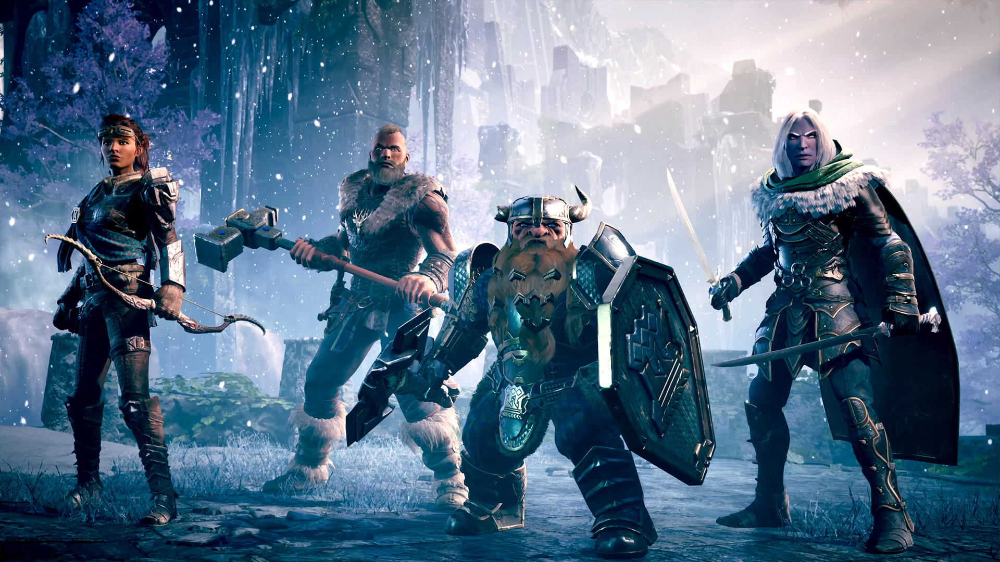

Jogabilidade

O jogo de batalha entre personagens baseados na Terra-Média que é o mundo do Senhor dos Anéis. A batalha ocorrepor turnos de forma automáticano formato de todos contra todos, considerando as características dos personagens. Cadapersonagem é de uma naçãoe possui 5 habilidades, conforme descrito a seguir.As habilidadesque os personagens possuem são força, velocidade, precisão, armadurae recuperação. Além da nacionalidade e das 5 habilidades, o personagem possui seus pontos de energia e um nome para identificá-lo ao longo de suas interações no jogo. No início do jogo, o personagem possui 100 pontosde energia e outros 100 pontos de habilidadesque devem ser distribuídos entre as habilidades da forma que o jogador preferir.
Leia maisPersonagem
postado 20 de março de 2022 
A batalha é realizada em um cenário fixo no qual podem ser alocados até oito jogadores, sendo que só pode haver um personagem de cada nação. O cenário é fixo porque a batalha inteira ocorre neste único cenário escolhido. Dentre os cenários possíveis, o jogo pode definirqualquer uma das oito casasdas nações.Não existem alianças e “amizades” entre os personagens, portanto eles se enfrentam em duelos de um contra o outro em cada rodadae o vencedor avança para a próxima rodada. No início da rodada, ospersonagens são distribuídosaleatoriamente em pares para realizarem a batalhae, caso a quantidade de personagens na batalha seja ímpar, um deles ficará fora da batalha e se classificará automaticamente para a rodada seguinte.Os vencedores de uma rodada são novamente distribuídos aleatoriamente para se enfrentarem em uma nova batalha. As rodadas são repetidas de acordo com a quantidade restante de personagens na arena, até que ocorra a batalha finale seja definido um personagem como o vencedor.O jogadorque “sobrou” na rodada anterior não pode sobrar novamentena rodada seguinte. AFigura 1exemplifica um cenário com cinco jogadores.
Leia maisTodos os direitos reservados
Cursos de TI da Estácio de Brasília em 2022.1 (TIEB 2022.1)
(terra media, Locais e Personagem são direitos de Terra Média)